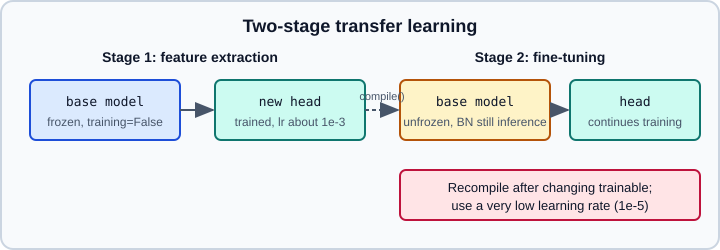

Transfer Learning & Fine-Tuning
|
This content was generated with the assistance of AI and should be verified against the official documentation before being relied on in production. |
Transfer learning reuses the features a model learned on a large dataset as the starting point for a smaller, related task. In Keras it comes down to three mechanisms: loading pre-trained weights, freezing layers with trainable, and controlling inference-time behaviour with the training argument. This page covers feature extraction, fine-tuning and their pitfalls. Larger and more recent pre-trained models are on Pre-trained Models with KerasHub; the CNN being reused is explained in Image Classification with CNNs; input pipelines are on tf.data and augmentation layers on Keras Preprocessing Layers. The general theory is in Transfer Learning and Foundation Models, and the PyTorch equivalent in PyTorch Transfer Learning.
It targets Python 3.13, TensorFlow 2.21 with Keras 3.15 (TensorFlow 2.22 is "upcoming"), and was checked against the official documentation on 2026-10-30. Examples were run on Python 3.13 with TensorFlow 2.21 and Keras 3.15 (CPU) on 2026-10-31, with the real ImageNet weights. The training snippets, whose train_ds and val_ds come from your own data, were run on a small synthetic image dataset.
The two-stage workflow

-
Load a pre-trained base without its classification head and freeze it.
-
Add a new head sized for your task. Call the base with
training=False. -
Compile and train only the head until it converges.
-
Optionally unfreeze all or part of the base, recompile with a very low learning rate and train a few more epochs.
Step 4 is optional and can overfit quickly on small datasets. Skipping the first stage is the usual mistake: a randomly initialised head sends large, meaningless gradients into the pre-trained layers and can destroy the features you wanted to reuse.
Freezing: trainable versus training
| Setting | Meaning |
|---|---|
|
Whether the layer’s weights are updated by the optimiser. |
|
Inference versus training behaviour: dropout on or off, which statistics BatchNormalization uses. Passed per call, not stored on the layer. |
The two are independent, with one deliberate exception: setting trainable = False on a BatchNormalization layer also makes it run in inference mode, so its moving mean and variance are no longer updated. When the frozen base is a whole model, call it with training=False as well so that its inner BatchNormalization layers and any dropout stay in inference mode.
import keras
layer = keras.layers.Dense(3)
layer.build((None, 4))
print(len(layer.trainable_weights), len(layer.non_trainable_weights)) # 2 0
layer.trainable = False
print(len(layer.trainable_weights), len(layer.non_trainable_weights)) # 0 2
bn = keras.layers.BatchNormalization()
bn.build((None, 4))
print(len(bn.trainable_weights), len(bn.non_trainable_weights)) # 2 2 (gamma, beta; moving mean and variance)The trainable state is captured when compile() runs. After changing trainable on any layer you must call compile() again, otherwise fit() keeps using the old set of trainable weights.
Stage 1: feature extraction
import keras
from keras import layers
IMG = (224, 224, 3)
base = keras.applications.EfficientNetV2B0(
weights="imagenet",
include_top=False,
input_shape=IMG,
)
base.trainable = False
augment = keras.Sequential([
layers.RandomFlip("horizontal"),
layers.RandomRotation(0.1),
])
inputs = keras.Input(shape=IMG)
x = augment(inputs) # active only while training
x = base(x, training=False) # BatchNorm stays in inference mode
x = layers.GlobalAveragePooling2D()(x)
x = layers.Dropout(0.2)(x)
outputs = layers.Dense(5)(x) # 5 classes, logits
model = keras.Model(inputs, outputs)
model.compile(
optimizer=keras.optimizers.Adam(1e-3),
loss=keras.losses.SparseCategoricalCrossentropy(from_logits=True),
metrics=[keras.metrics.SparseCategoricalAccuracy()],
)
# train_ds / val_ds: tf.data.Dataset of (images, integer labels)
history = model.fit(train_ds, validation_data=val_ds, epochs=5)Source: https://keras.io/guides/transfer_learning/ and https://www.tensorflow.org/tutorials/images/transfer_learning
Notes on the code:
-
include_top=Falsedrops the original ImageNet classifier so you can attach your own head. Pooling the final feature map withGlobalAveragePooling2Dis the common alternative to flattening. -
keras.applicationsmodels normally include their own input scaling (the EfficientNetV2 family expects raw 0-255 pixels), but others expect a specificpreprocess_inputfunction from their module. Check the docstring of the model you choose, and put whatever scaling is needed inside the model so exported models accept raw images. -
Augmentation layers such as
RandomFlipare only active whentraining=True; duringpredictandevaluatethey pass data through unchanged. -
The head ends in raw logits, hence
from_logits=Truein the loss. Do not also add a softmax to the layer. -
Another approach is to run the frozen base once over the data and cache the features, then train only the head. It is much faster per epoch but cannot apply random augmentation each epoch.
Stage 2: fine-tuning
base.trainable = True
# Optionally keep the early, generic layers frozen
for layer in base.layers[:-30]:
layer.trainable = False
model.compile( # required after changing trainable
optimizer=keras.optimizers.Adam(1e-5), # about 100x lower than stage 1
loss=keras.losses.SparseCategoricalCrossentropy(from_logits=True),
metrics=[keras.metrics.SparseCategoricalAccuracy()],
)
model.fit(train_ds, validation_data=val_ds, epochs=5)Guidelines:
-
Fine-tune only after the head has converged.
-
Use a learning rate one to two orders of magnitude lower than in stage 1. A schedule from Optimizers & Learning-Rate Schedules with a short warm-up is a good option.
-
Unfreezing only the last blocks is a sensible compromise: early layers detect edges and textures that transfer almost unchanged, later layers are task specific.
-
Keep
training=Falsewhen calling the base inside the functional model. Because it is a call argument baked into the graph, the BatchNormalization layers keep their ImageNet statistics even when their weights are unfrozen. Updating batch statistics on a small batch size is a common cause of accuracy collapsing after unfreezing. -
Watch the validation curve; if it diverges from the training curve, stop early with the callbacks on Callbacks.
Choosing a pre-trained model
keras.applications offers the classic ImageNet classifiers (ResNet, MobileNet, EfficientNet, EfficientNetV2, ConvNeXt, DenseNet, Xception, VGG and others). Each has a weights argument ("imagenet" or None), include_top, input_shape, pooling and classifier_activation. Weights are downloaded on first use and cached under ~/.keras. Models trained for ImageNet-1k work as general feature extractors, but a mobile target should start from MobileNet or EfficientNet-B0 sized models rather than a large ResNet or ConvNeXt. For newer vision backbones and for text, audio and multimodal checkpoints use KerasHub; for the Hugging Face ecosystem see Hugging Face Hub Essentials.
Loading only part of a model
You can also cut a pre-trained model at an intermediate layer, which is how hierarchical features or multi-scale outputs are obtained:
base = keras.applications.MobileNetV3Small(weights="imagenet", include_top=False, input_shape=(224, 224, 3))
feature_extractor = keras.Model(
inputs=base.inputs,
outputs=[base.get_layer(name).output for name in ("expanded_conv_2_add", "expanded_conv_5_add")],
)Layer names differ per model; inspect them with base.summary() or [l.name for l in base.layers].
Pitfalls
-
Forgetting
training=Falseon the base: BatchNormalization statistics are overwritten by your small dataset. -
Forgetting to recompile after changing
trainable. -
Fine-tuning at the stage-1 learning rate, which erases pre-trained features within a few steps.
-
Feeding the wrong input range or channel order to a model that expects its own
preprocess_input. -
Using
weights="imagenet"with a differentinput_shapechannel count (for example 1-channel images); the first convolution’s weights no longer match. Convert the images to 3 channels instead. -
Class imbalance: weight classes with the
class_weightargument offitrather than expecting the pre-trained features to fix it. -
Saving: the
.kerasformat stores the whole model including frozen state; see Saving Keras Models. -
Older Keras 2 era tutorials freeze by setting
layer.trainable = Falseafter compiling and expect it to take effect; that behaviour is outdated.